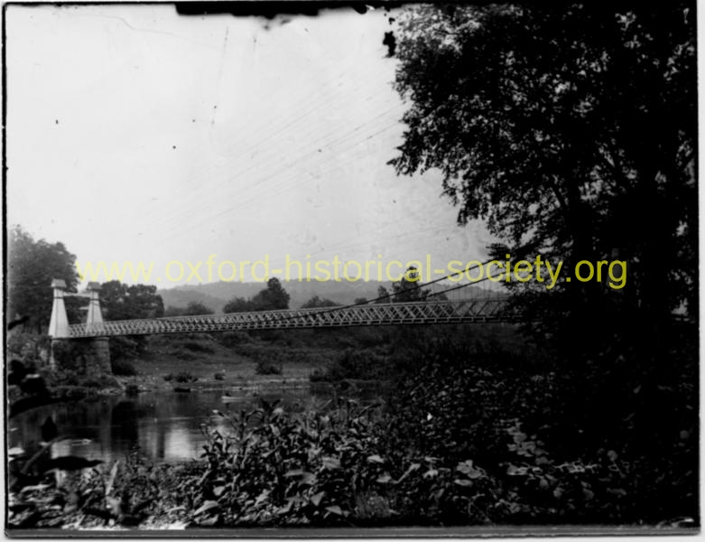

 082_Zoar-bridge-looking-up-river_2012-PF.jpg
Scenic photo of Zoar Bridge. Note how high above the water level the bridge stands. See articles of the Hartford Courant about ice jams rising up to the height of the bridge and damaging the bridge during ice freshets.
Previous
Thumbnails
Next